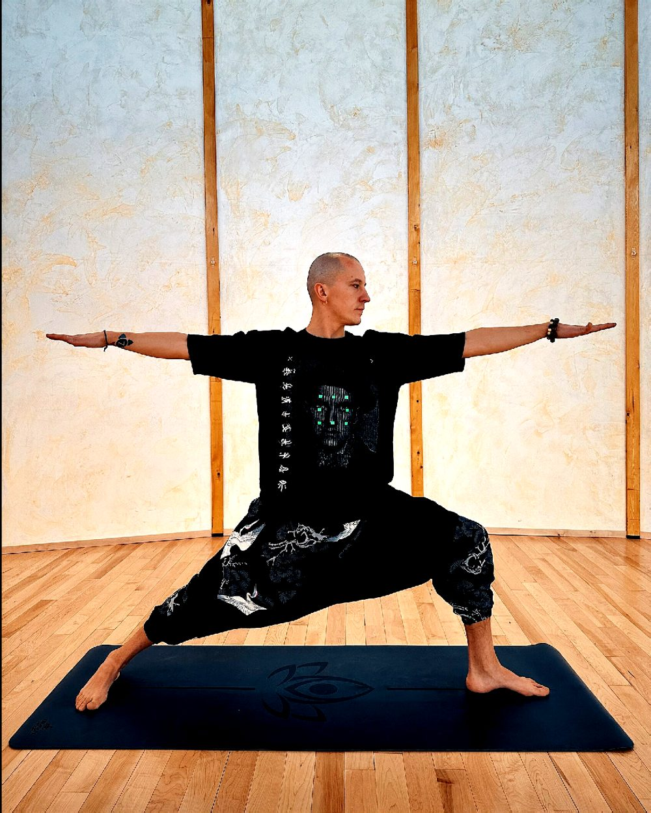

Building with coding agents
Designing, building and deploying production websites end to end with AI coding agents: branding, content, hosting, DNS and all. yogacybin.com and this page were built that way, with me directing and reviewing every step.
Technical sales leaderDemo lab builderAI engineerYoga teacher
I make complex technology make sense to people, and I make people feel at ease around it.
Stats for nerds
Scrub the timeline, or press play.
About
I started as a software tester in Saint Petersburg and ended up running a global demo lab in Colorado, with a lot of airports in between. My job, in every title I've had, has been the same: take something complicated, a Pay TV platform, a streaming stack, a DRM chain, and make it work in front of a customer who has five minutes and a hundred questions.
Along the way I learned that the technology is rarely the hard part. The hard part is people: the engineer who needs to trust you, the client who needs to understand you, the team two time zones away that needs to feel like one team. That's where the yoga comes in, and the Russian, and the hundred videos I made so nobody has to read a spec sheet.
These days I spend a lot of my time working with AI: building with coding agents, producing video with generative tools, and figuring out where automation actually helps. I'm looking for the next place where all of that is useful.
Chapters
Orion Global Ovation Awards, 2020 and 2021
New season
Not a research lab. The practical kind: pointing today's models at real work and shipping the result.
Designing, building and deploying production websites end to end with AI coding agents: branding, content, hosting, DNS and all. yogacybin.com and this page were built that way, with me directing and reviewing every step.
A repeatable workflow for marketing, sales and training videos: scripts and storyboards with LLMs, visuals with generative video, finishing in traditional editors. 100+ videos delivered.
Using models to speed up customer support, documentation and demo preparation, and knowing where a human still has to be in the loop.
Turning messy spreadsheets and documents into clean, generated web pages people actually use, with reproducible build scripts rather than one-off edits.
Off the clock, on the mat
RYT-200 yoga instructor, CPR and AED certified, insured. I teach weekly donation-based classes at Harmonist Sanctuary and Stout Street Foundation in Denver, classes at Denver Yoga Underground, and I've facilitated international retreats with The Blue Portal in Jamaica and Costa Rica.
It's not a side note. Holding a room of twenty nervous people is the same skill as holding a room of twenty skeptical engineers, and I use it every day.

Codecs supported
RTP · RTSP · MPEG-DASH · HLS · WebRTC · DRM: PlayReady, Widevine, FairPlay · OTT · IPTV · Pay TV · Set-top boxes · Android TV · Tizen · webOS
Network design · Backup systems · Multi-site labs · CI/CD environments · Linux · Demo automation · Hardware logistics
Pre-sales strategy · Live demos · Trade shows · Proofs of concept · Customer training · Mentoring · Distributed teams · English and Russian
Coding agents · LLM workflows · Generative video · Video editing · Storytelling · Jira · Confluence
Education: Saint Petersburg Electrotechnical University "LETI", Automation & Control, 2004–2008 · Software Test Engineering certificate, StarSoft, 2007 · 200-hour Yoga Teacher Training, Denver Yoga Underground · AHA Basic Life Support, valid to 2027
End of stream
Technical sales, solutions, demo and lab leadership, AI-assisted engineering, or something in between. Denver, Colorado, and remote.